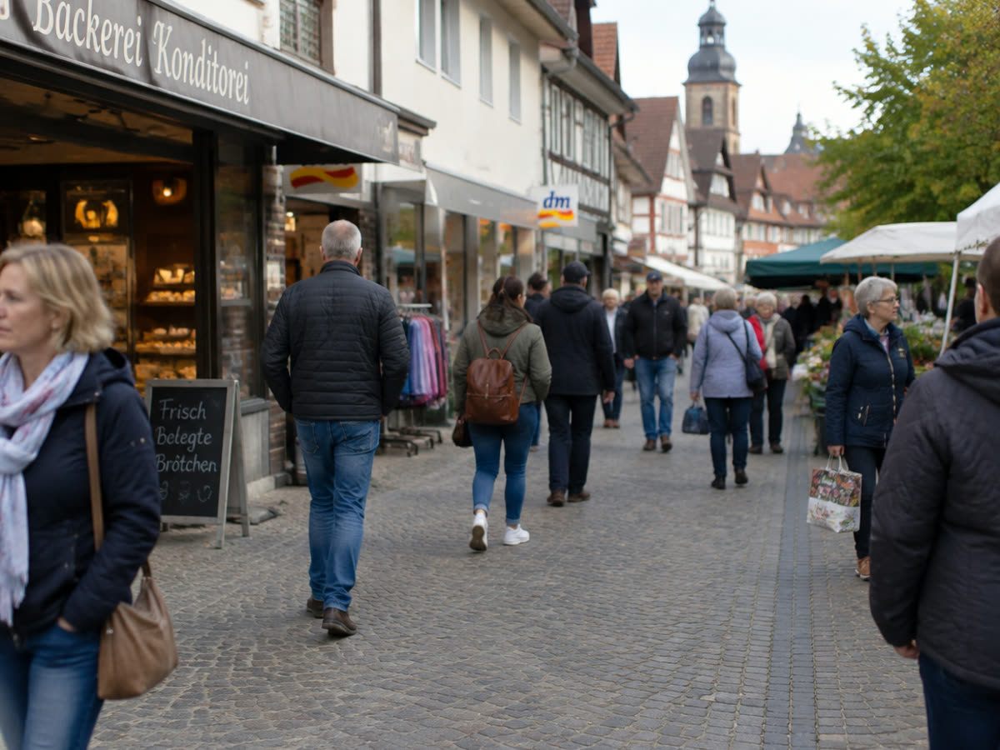
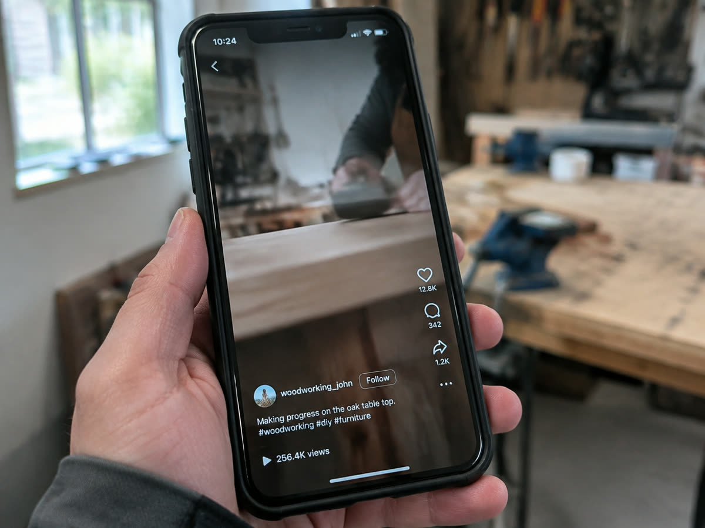

Reichweite ohne Follower
„Uns folgt doch niemand“ ist der häufigste Grund, nicht anzufangen. Bei Kurzvideo ist er falsch.
Der am häufigsten genannte Grund, gar nicht erst anzufangen, lautet: "Uns folgt doch niemand." Bei klassischen Beiträgen wäre das ein guter Einwand. Bei Kurzvideos ist er falsch, und zwar grundlegend. Die Followerzahl ist für die Reichweite eines Reels fast bedeutungslos.

Wie ein Reel tatsächlich ausgespielt wird
Ein neues Video wird zunächst einer kleinen Gruppe gezeigt, meist einigen Hundert Menschen. Darunter sind einige Ihrer Follower, vor allem aber Leute, die Ihnen nicht folgen und die aufgrund ihres bisherigen Verhaltens für dieses Thema infrage kommen.
Die Plattform misst dann, was passiert: Wie viele bleiben dran? Wie viele sehen es zu Ende? Wie viele schauen es ein zweites Mal, speichern oder schicken es weiter? Fallen diese Werte gut aus, kommt die nächste, größere Gruppe. Und so weiter, in Stufen.
Ein Profil mit achtzig Followern und ein Profil mit achttausend starten damit fast gleich. Der Unterschied liegt darin, wie gut das Video die erste Stufe übersteht, und das hängt am Video, nicht am Profil.
Was das in der Praxis bedeutet
Erstens: Der Start ist nicht die schwere Phase. Viele Betriebe haben ihr bestes Video in den ersten vier Wochen, einfach weil das Thema trägt.
Zweitens: Follower sind ein Ergebnis, kein Werkzeug. Sie wachsen, wenn Videos laufen. Sie zu kaufen bringt nichts, weil gekaufte Konten nicht zusehen und das Verhältnis zwischen Reichweite und Interaktion verschlechtern. Die Ausspielung wird dadurch schlechter, nicht besser.
Drittens: Ein Video, das nicht läuft, ist kein Urteil über den Betrieb. Es ist eine Rückmeldung über dieses eine Video, meist über seinen Anfang. Siehe Die ersten zwei Sekunden.

Warum Durchhalten trotzdem nötig ist
Wenn die Followerzahl kaum zählt, warum dann die Regelmäßigkeit? Weil nicht jedes Video die erste Stufe übersteht. Das ist normal und lässt sich nicht wegplanen.
Bei zwölf Videos im Monat ist die Wahrscheinlichkeit hoch, dass zwei oder drei deutlich herauslaufen. Bei drei Videos kann es passieren, dass keines dabei ist, und dann sieht es so aus, als funktioniere das Format nicht. Dazu kommt, dass die Plattform ein Profil erst thematisch einordnen muss, und das geschieht über Wiederholung. Mehr dazu unter Wie oft sollte man posten?
Welche Reichweite überhaupt nützlich ist
Für einen Betrieb mit örtlich gebundener Kundschaft ist nicht jede Reichweite gleich viel wert. Hunderttausend Aufrufe, von denen fast alle aus anderen Bundesländern kommen, bringen keine Anfrage.
Deshalb lohnt es, Ort und Umgebung im Video sichtbar zu machen: im gesprochenen Text, in den Untertiteln, im Begleittext. Die Plattform nutzt diese Hinweise bei der Einordnung, und es sorgt dafür, dass Menschen aus der Gegend sich angesprochen fühlen.
Ein Video mit viertausend Aufrufen im Umkreis von dreißig Kilometern ist für einen Handwerksbetrieb mehr wert als eines mit achtzigtausend bundesweit. Welche Zahlen das zeigen, steht unter Welche Zahlen wirklich zählen.
Wenn Sie sehen wollen, wie sich das bei Ihrem Betrieb verhält, ohne vorher zu zahlen: Der erste Monat kostet nichts und endet ohne Kündigung.


Monat eins, 100 % kostenlos.
Wir drehen, schneiden und veröffentlichen einen Monat lang. Ohne Rechnung, ohne Kündigungsfrist.